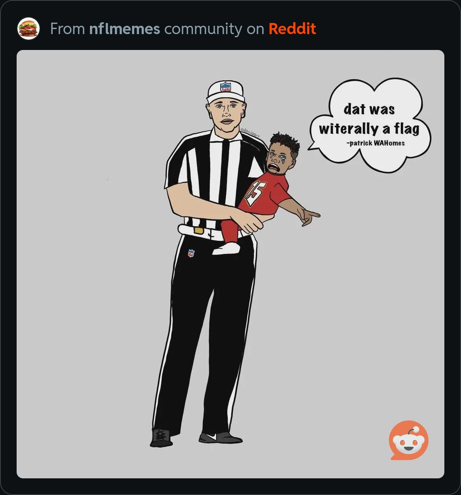

I am a recent graduate of Florida International University (Class of 2023), where I earned a Bachelor’s degree in Computer Science. I completed two internships during my studies that enhanced my technical expertise and professional skills. I am now preparing to pursue a Master’s degree in a specialized field of computer science. As a passionate programmer, I am proficient in multiple programming languages, including TypeScript, C, R, and JavaScript, and I am actively working to master Java, C#, and C++.
Problem-solving and learning drive me, and I approach challenges with determination and adaptability. Beyond my professional interests, I am an avid gamer who enjoys strategy games such as Civilization VI , Humankind, and Stellaris, with a growing appreciation for the Crusader Kings. These hobbies reflect my analytical mindset and love for strategic thinking. While navigating a challenging job market, I am determined to restart my career with a clear goal: to secure a fulfilling role that enables me to achieve professional success and purchase a home by 2025. I am eager to embrace new opportunities, including job offers and interviews, as I work toward this milestone
Read More